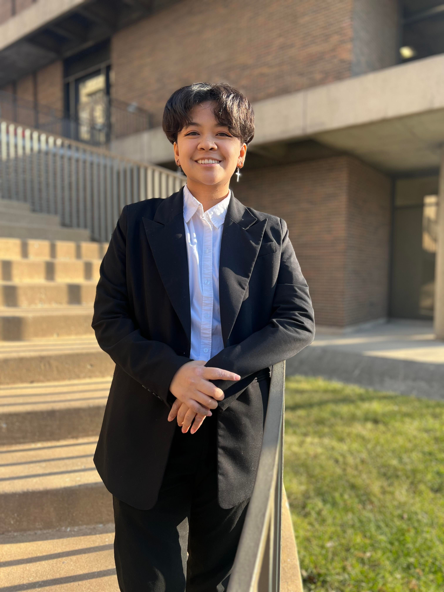

Alyanna Cheska Arroyo

Summary
A graduating Computer Science major with learning experience on coding,
designing, and research. Very open to newer experiences and opportunities to
learn
Education
- Downers Grove South High School
Work Eperience
- K2 Services | Help Desk Analyst
January 2023 - May 2023
- Troubleshooting client's technical issues
- Data Collector | MAPSCORPS
October 2022 - December 2022
- Entering data into computer database or spreadsheet
- Observe and record urban infrastructure needs
Skills
Soft Skills
- Leadership skills, Communication/collaboration, strong work ethic, selfmanagement, time management
Technical Skills
- C#, C++, Java, Javascript, SQL, ASP.NET core, HTML, CSS, UI/UX Design,
Figma, jquery, Node.js, React, Application development, web development
Contact
Hobbies